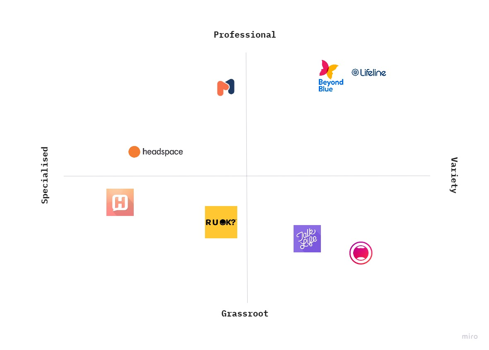
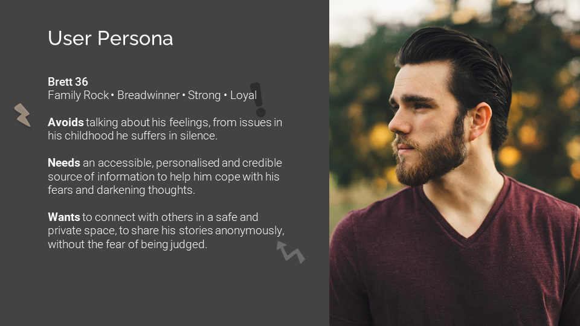
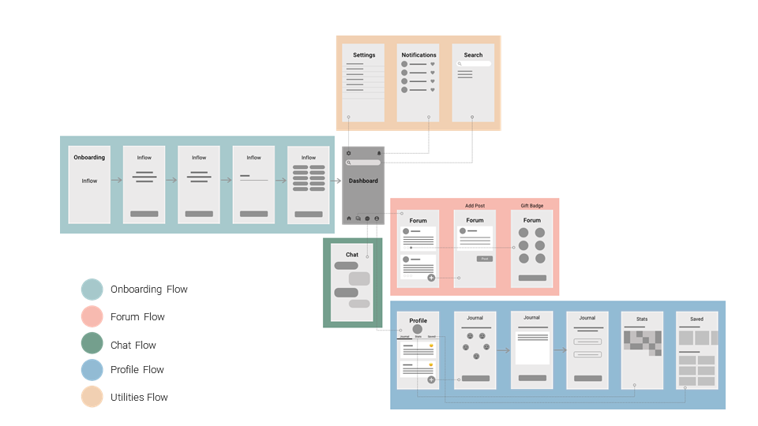

Overview
The final group project at the University of Adelaide’s UX/UI Bootcamp was free to choose the theme for our project.
During the initial brainstorming session, Justine and I realised that we are both interested in the mental health topic. We decided that we would make a mental health app that would benefit users with mild to moderate anxiety, depression, and stress. While many existing apps and services cater to this cohort, they are either too broad and clinical or too specific and casual.
The final product is Inflow, a mental health companion mobile application that aims to provide a middle ground where users can receive professional help in a comfortable and relaxed environment thus improving their mental well-being and quality of life.
Initial Research
In this project, our goals are to:
- Understand people’s coping strategies when faced with mild to moderate anxiety, depression, and stress.
- Discover what are the components of a good mental health app.
With the goals in mind, we started with a survey, where we eventually received 68 responses. We found that:
- 35/68 said they are looking for mental health information online.
- Participants tend to share their problems with people who are close to them (e.g. family, friends)
- Besides sharing their issues, participants like to practice mindfulness, do regular exercise and seek professional support to improve their mental well-being.
We also did a literature review and came across three important resources that helped us accelerate our understanding:
1. Do Mental Health Apps work (Chadrashekar, 2018) - The paper provides evidence and recommendations for designing high efficacy mental health mobile apps.
2. Insights from user reviews to improve mental health apps (Alqahtani & Orji, 2020) - The researchers mined reviews of 106 mental health apps from Google Play Store and Apple’s App Store and conducted thematic analysis on 13,549 reviews. The review analysis shows many valuable user insights.
3. Guidelines to Designing Apps for Mental Health (Mesibov, 2018) - The article detailing the journey that Mesibov and her team at Mad*Pow partook to develop the guidelines for designing apps for Mental Health.
In short, our research showed that users want an app that:
- Have intuitive UI
- User evidence-based contents and methods
- Offer multiple functions
- Offer social engagement tools
- Allow users to personalize the app
- Respect users’ privacy and allow them to remain anonymous.
Positioning The Product
Understanding that we will not be the first mental health app on the market, we also did a competitor analysis to see what we should do to make our product stand out. A matrix was made to summarise our finding:
On the left, we have specialized apps like HearMe – a messenger app similar to Lifeline crisis chat support service, and Headspace – a well-known meditation app with minimal UI. On the other hand, on the upper far right we have Beyond Blue and Lifeline – Two not-for-profit organisations that offer a wide range of services and information. On the lower right, we have Talk Life and Vent which are social media-like apps that focus on mental health topics and building a grassroots community.
Noticing the gap between the two professional services and two other grassroots mobile apps, we decided to position our app right in between.
We also made a user persona to help illustrate our target audience:
Main Features
With all the insights in mind, we decided to settle on four main functions for the initial prototype:
- A personalised mental health library
- Built-in self-reflecting tools
- Community Forum
- Support Chat run by volunteers
Below is the wire flow showing the information architecture of the app:
Features in Detail
- What mental health topics are they interested in – This will then be used to curate a reading list that will appear on the dashboard.
- The users’ first name – So that when other users look at a username they are reminded that there is a real person behind an account and not just a mere string of text on the internet.
1. Onboarding and Dashboard
New users begin their journey with a quick onboarding sequence, explaining the features of the app, and asked two key pieces of information:
2. Forum
Borrow the concept of a social media newsfeed. The difference is that users cannot comment on a post and create a new post unless they have created an account with us. We are applying this limit to minimize harm on the forum in case of potential online trolling and bullying. Users are still given the option to interact with the “gift a badge” features. Visit the style guide to view the badge design in detail.
We are applying this limit to minimize harm on the forum in case of potential online trolling and bullying.
3. Self-reflecting Tools
Within the profile screen, there will be journaling and mood tracking tools, as well as a tab for bookmarked articles.
4. Chat Function
Connects the user directly to an available volunteer. We plan to explore it more in the future.
When making this app, we agreed that we do not want to lock away any essential features of the app to users just because they do not want to create an account with us.
A coded prototype was also created with HTML and CSS as a proof of concept.
Next Steps
- Testing of the hi-fi prototype – although we have done several usability tests in between the lo-fi prototype and hi-fi prototype, we have not tested the hi-fi itself.
- Expand the chat function – the current chat function design is very barebone, that is why we want to flesh it out in the future.
- Exploring the support/volunteer users’ flows – initially, this was in our plan. We had even made a persona for this type of user, but we decided to cut it out of the scope because of time constraints. We would love to revisit and develop features for this group of users.